Podman is an open-source container management tool used to create, run, and manage containers on Linux systems.
PostgreSQL ek open-source relational database management system (RDBMS) hai jo data storage aur management ke liye istemal hota hai.
sudo apt install -y podman
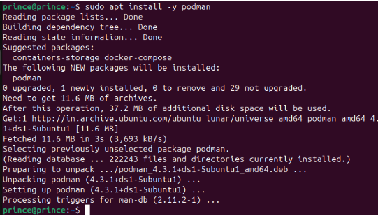
podman version
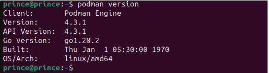
sudo mkdir -p /home/prince/postgres-data
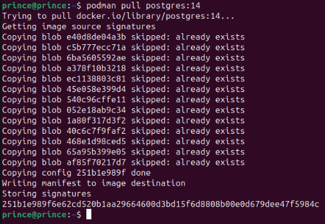
podman run --name postgres -d -p 5432:5432 -e POSTGRES_PASSWORD=mysecretpassword -v postgres-data:/var/lib/postgresql/data postgres:14
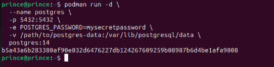
podman ps
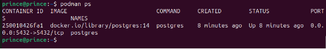
podman exec -it postgres psql -U postgres
CREATE USER noida WITH PASSWORD 'noida1'; CREATE USER delhi WITH PASSWORD 'delhi1'; CREATE USER gurugram WITH PASSWORD 'gurugram1'; CREATE ROLE CREATE ROLE CREATE ROLE
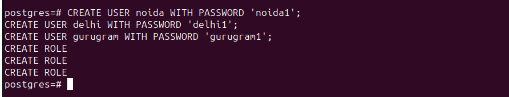
postgres=# CREATE DATABASE my_database;
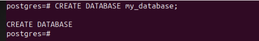
postgres=# \l (List of databases)
postgres=# \c (connected to database)
CREATE TABLE my_table ( id SERIAL NOT NULL PRIMARY KEY, name VARCHAR(255) NOT NULL );
CREATE TABLE: This keyword tells the database to create a new table.
my_table: This is the name of the table that is being created.
( id SERIAL NOT NULL PRIMARY KEY, name VARCHAR(255) NOT NULL ): This is the definition of the table, which includes the names and data types of the columns in the table.
id SERIAL NOT NULL PRIMARY KEY: This column will store the unique identifier for each row in the table. The SERIAL data type means that the database will automatically generate a unique integer value for each new row that is inserted into the table. The NOT NULL constraint means that this column cannot be empty. The PRIMARY KEY constraint means that this column uniquely identifies each row in the table.
name VARCHAR(255) NOT NULL: This column will store the name of each row in the table. The VARCHAR(255) data type means that this column can store up to 255 characters of text. The NOT NULL constraint means that this column cannot be empty.
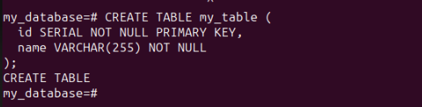
CREATE EXTENSION pg_trgm;
CREATE EXTENSION
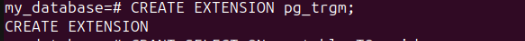
EXTENSION Ye SQL statement PostgreSQL database mein ek extension ko create karne ya activate karne ke liye istemal hota hai. Extension ek prakar ke additional modules ya functions hote hain jo PostgreSQL database functionality ko extend karte hain.
pg_trgm Ye extension PostgreSQL mein full-text search aur trigram similarity capabilities provide karta hai. Full-text search ka use karke, aap apne data mein text ko search kar sakte hain. Trigram similarity ka use karke, aap apne data mein text ke similarity ko calculate kar sakte hain. In capabilities ka use karne ke kai liye hai. For example, aap ine capabilities ka use karke ek website mein contents ko search kar sakte hain, ek database mein data ko search kar sakte hain, ya ek document collection mein documents ko search kar sakte hain.
CRUD (Create, Read, Update, Delete)
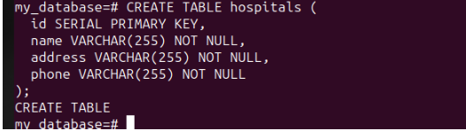
my_database=# select * from hospitals;
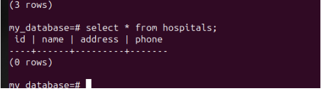
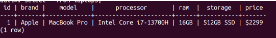
UPDATE laptops SET price = '2,49,900' WHERE id = 1;
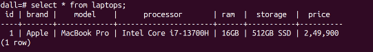
dall=# DELETE FROM laptops WHERE id = 1;
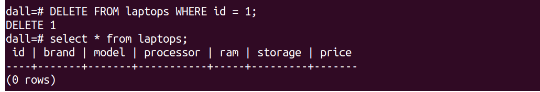
CREATE ROLE user 1 WITH LOGIN PASSWORD 'password1'; CREATE ROLE user 2 WITH LOGIN PASSWORD 'password2'; CREATE ROLE user 3WITH LOGIN PASSWORD 'password3';
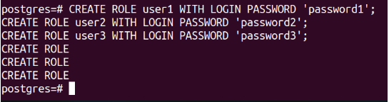
\du (User show)
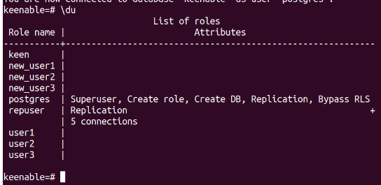
GRANT ALL PRIVILEGES ON ALL TABLES IN SCHEMA public TO user3;
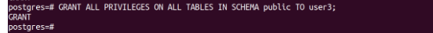
pg_dump -U your_superuser -d your_source_database -t your_table_name -f dump_file_name.sql
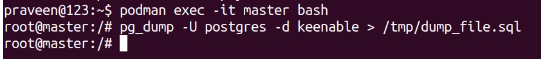
DUMP file restore
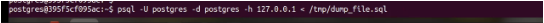
podman network create --subnet=172.18.0.0/24 postnetwork**
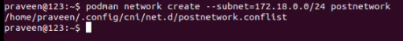
mkdir -p /home/praveen/data/psql/master mkdir -p /home/praveen/data/psql/slave mkdir -p /home/praveen/data/psql/repl Make Directorypodman unshare chown -R 999:999 /home/praveen/data/psql/master podman unshare chown -R 999:999 /home/parveen/data/psql/slave podman unshare chown -R 999:999 /home/praveen/data/psql/repl
podman run -d
--network postnetwork --ip 172.18.0.101 -p 5432:5432
--name master -h master
-e "POSTGRES_DB=postgres"
-e "POSTGRES_USER=postgres"
-e "POSTGRES_PASSWORD=redhat"
-v /home/praveen/data/psql/master:/var/lib/postgresql/data
docker.io/postgres
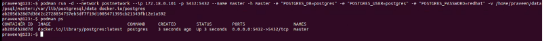
podman run -d
--network postnetwork --ip 172.18.0.102 -p 5433:5432
--name slave -h slave
-e "POSTGRES_DB=postgres"
-e "POSTGRES_USER=postgres"
-e "POSTGRES_PASSWORD=redhat"
-v /home/praveen/data/psql/slave:/var/lib/postgresql/data
-v /home/praveen/data/psql/repl:/var/lib/postgresql/repl
docker.io/postgres
1.(a) (MASTER SARVAR)
podman exec -it master bash psql -U postgres
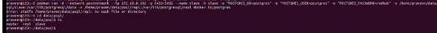
(b)
postgres=# CREATE ROLE repuser WITH LOGIN REPLICATION CONNECTION LIMIT 5 PASSWORD 'redhat';
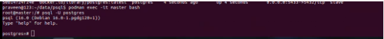
\du
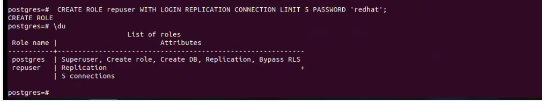
cd /home/ppraveen/data/psql/master
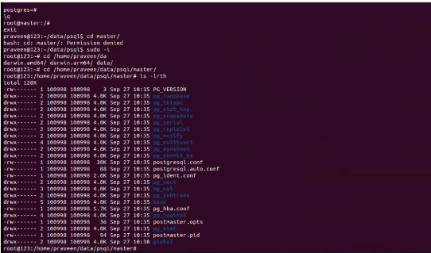
(d)
vim postgresql.conf archive_mode = on # Enable Archive Mode archive_command = '/bin/date' # Set archiving behavior #The sum of the number of concurrent connections from the slave to the host max_wal_senders = 10 #Specifies that if the backup server needs to obtain log segment files for stream replication, pg_ The minimum size of past log file segments that can be retained in the wal directory wal_keep_size = 16 #Specify a list of backup servers that support synchronous replication synchronous_standby_names = '*'
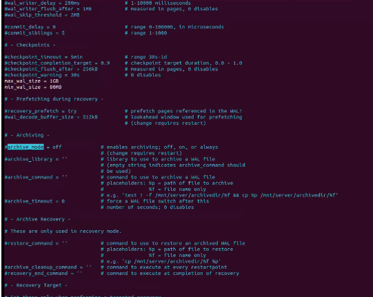
2. (a) SLAVE container
podman exec -it -u postgres slave /bin/bash
postgres@slave:/$ pg_basebackup -R -D /var/lib/postgresql/repl -Fp -Xs -v -P -h 172.18.0.101 -p 5432 -U repuser
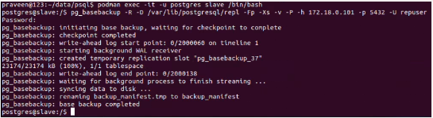
create schema myschema;
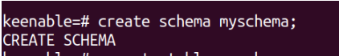
\dn (show schema)
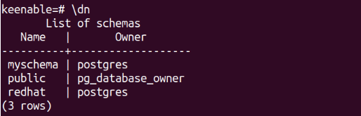
create table myschema.company
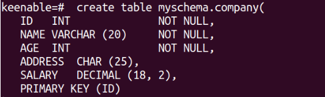
select * from myschema.company;
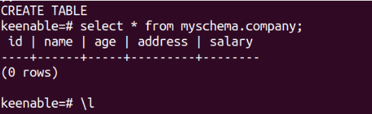
\dx (extensions show)
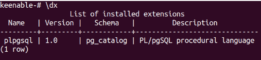
Plpgsql:- ek PostgreSQL extension hai, jiska matlab "Procedural Language/PostgreSQL" hota hai. Ye extension PostgreSQL mein stored procedures, functions, aur triggers likhne ke liye ek procedural programming language provide karta hai. plpgsql PostgreSQL database mein built-in tariko se PostgreSQL ke features aur data par programmatic control dene me madad karta hai.
Different types of joins:
CREATE TABLE best_android_phones
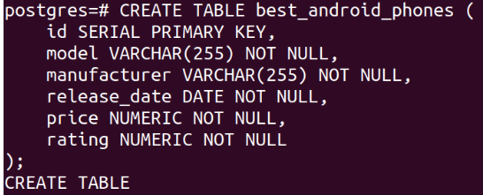
INSERT INTO best_android_phones
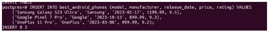
\dt
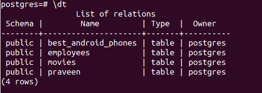
select * from best_android_phones;
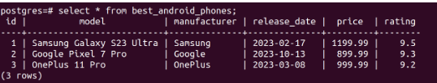
CREATE TABLE ratings
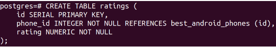
INSERT INTO ratings
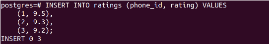
INNER JOIN
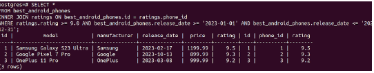
(a) Table structure
(\d table name)
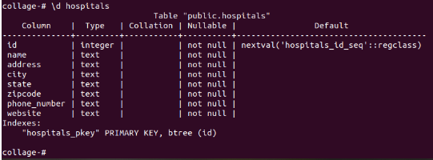
(b) finding database size
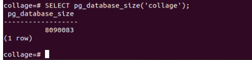
(c) table size
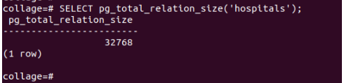
(a)
SQL CREATE TABLE new_students AS ( SELECT id, name, email FROM students );
\dt (table show )
select * from students; ( table show )
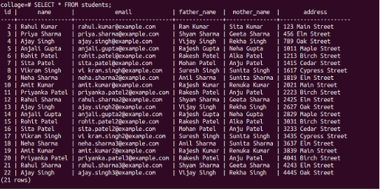
(b)
CREATE TABLE new_students AS ( SELECT * FROM students );
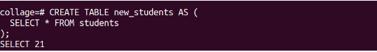
COPY new_students FROM students;
SELECT * FROM new_students;
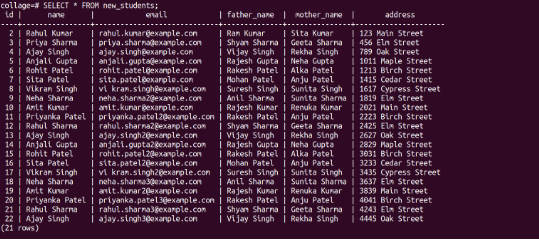
\dt
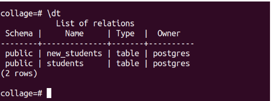
(a) indexes
CREATE INDEX idx_contractor_name ON contractor (contractor_name);
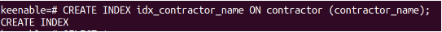
SELECT * FROM contractor WHERE contractor_name = 'praveen';
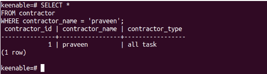
(b) sequence
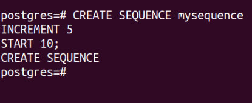
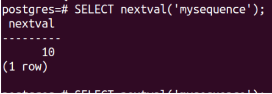
trigger
Trigger name is ‘ Backup’ table whenever data is deleted from ‘main’ table.
create table linux ( id int, salary int);
insert into linux values(1,10000); insert into linux values(2,20000);
Create table backup ( id int, Salary int);
CREATE OR REPLACE FUNCTION backup_function() RETURNS TRIGGER AS BEGIN INSERT INTO backup VALUES (OLD.id, OLD.salary); RETURN OLD; END; $$ LANGUAGE plpgsql; CREATE TRIGGER t1 BEFORE DELETE ON linux FOR EACH ROW EXECUTE FUNCTION backup_function();
delete from linux where id=1;
union
SELECT * FROM new_students UNION SELECT * FROM person UNION SELECT * FROM students;
ALTER TABLE students ADD COLUMN major VARCHAR(255);
lock
collage=# select *from students;
BEGIN; LOCK TABLE students IN SHARE MODE; -- Access the students table COMMIT; BEGIN LOCK TABLE COMMIT
materialised view
CREATE MATERIALIZED VIEW new_students_materialized AS SELECT *
collage=# SELECT name, father_name FROM new_students_materialized_view;
function
function user-defined procedures hain jin ka upyog common tasks ko perform karne ke liye kiya ja sakta hai, jaise data ko format karna, values calculate karna, aur data ko validate karna।
function to calculate the age:
CREATE OR REPLACE FUNCTION calculate_age(date_of_birth date) RETURNS integer AS $$ DECLARE age_in_years integer; BEGIN SELECT EXTRACT(YEAR FROM age(date_of_birth)) INTO age_in_years; RETURN age_in_years; END;LANGUAGE plpgsql;